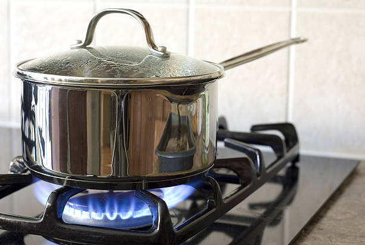
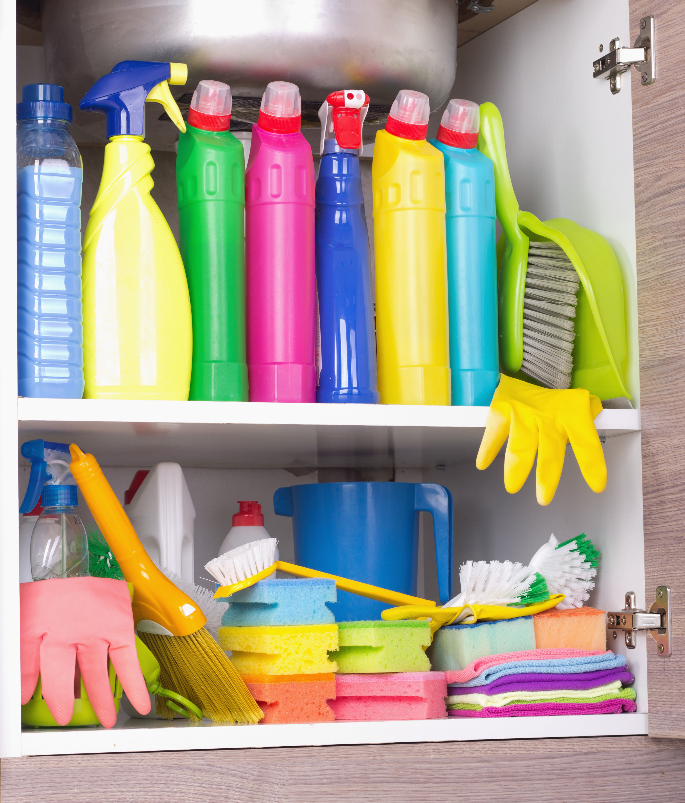
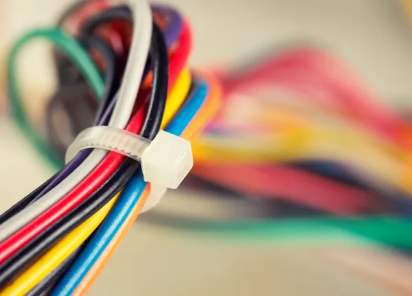

| 
Never leave your cooking unattended |
It only takes a few seconds for a fire to break out. If you need to leave the kitchen for any reason whatsoever, make sure to either ask someone to watch the food for you or turn everything off altogether until you’re back. |
| 
Store any flammable products correctly |
Household cleaners and items such as hair spray or shaving cream may be very hazardous if exposed to a strong source of heat. Always store these safely in a cool area away from any heaters. |
| 
Maintain your wires |
Before you plug something into a socket, try to be courteous in ensuring that the wire hasn’t been torn or chewed up (in case you have any pets running around). Damaged wires can be a detrimental fire hazard and need replacing as soon as possible. Also, remember that wires do get hot when in use, so be sure to check your wire placement and avoiding passing them under a carpet or anywhere that could potentially catch fire. |

Keep a fire extinguisher at all times! |
Fire extinguishers will be your best defence in the event of a fire breaking out. Every family member should know how to use a fire extinguisher, so in case something in your home does catch fire, it can be put out as fast as possible. |